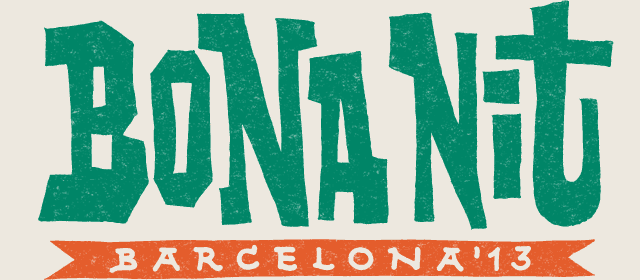
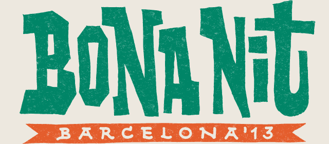

In Catalan, "Bona Nit" can bear two meanings: it can be used as a greeting, or it can literally mean "good night". The actual definition of this festival is in between both meanings. On the one hand, it is the communication of the proposal we want to share with the world. It is also the phrase that foreign bands are taught when they arrive in Barcelona, which will guarantee a better connection with their audience. Language, music, and culture as a whole are the best ways of forging links between people.
On the other hand, what does a "good night" mean to a music lover? A cohesive artistic proposal, fuelled by an excellent relationship between the bands that promises to offer a once-in-a-lifetime show; an open-air venue at the heart of Montjuïc, touched by the fresh summer breeze; a catering service with varied, organic food to choose from and with vegetarian-friendly options; a healthy and clean environment that does not generate any unnecessary waste; a small-scale venue that will guarantee the show is comfortably enjoyed?
In this inaugural edition, we will host Norway as the guest country: a wonderful example both of a booming cultural industry and of environmental commitment, an awareness also fostered by our festival. And if you cannot live the experience in first person, you will be able to follow us through the open-source streaming service we will provide, so that anyone can broadcast what ´s going on at the festival from their own websites.
Bona Nit Barcelona, have a good night!
Av. de Francesc Ferrer i Guàrdia, 1308038 Barcelona
 Metro
Metro Stop Espanya
Stop Espanya
MetroStop Espanya
 Ferrocarril CatalansStop Espanya
Ferrocarril CatalansStop Espanya
 Auto bus13
150
Auto bus13
150


We want Bona Nit Barcelona to be a sustainable event, and as you are also part of the festival we would like you to help us to achieve it.
When you enter the venue, you will be given a reusable plastic cup, please keep it until the end of the festival. Therefore you will get both a more clear venue and also a beautiful plastic cup as souvenir.
The venue will have different waste baskets. Please make sure to use the proper one in each case, remember:
YELLOW: plastic packaging, tetra paks and other polycoat cartons, cans.
BLUE: paper and cardboard. Please donât throw dirty paper, as napkins or tissues.
GREY: general non-recyclable waste. Napkins, tissues, cigarette butts, sanitary towels, etc.
BROWN: organic waste. Leftovers of meat, fish, bread, fruit, vegetables, seafood and nuts, etc.
GREEN: sglass only. Remember to remove plastic or metal caps, and throw them to the yellow container.
Please make sure to turn off the tap when youâre not using water, and help us to avoid water leak by warning the festival organization.
Please donât use the toilet as a waste basket.
If you live in Barcelona, you can come with your bike or use Bicing. Another sustainable option is to use public transport.
If we pull out all the stops, we will enjoy even more of Bona Nit Barcelona.


BeCool: Our collaborator Indiespot DJs will fire his well-known and inerrant selection of hits, picking the freshest produce from the international scene.
City Hall: Double bill formed by Marcin Öz, bass player at The Whitest Boy Alive and co-producer of KAKKMADDAFAKKA in his most danceable side, together with Joan S. Luna: one of the key personalities to understanding Barcelona's music scene..
 



 See map
See map